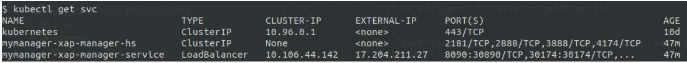

The demo in
Type the following Helm command to deploy a Space cluster with n Data Pods, with a partition count from 1 to n:
helm install insightedge --name test --set pu.partitions=n
This topic describes these aspects of deploying a Space.
Kubernetes services define a logical set of Pods and a policy by which to access them. Kubegrid can be deployed with these Kubernetes service types:
LoadBalancer - External load balancer in the cloud with dedicated IP address
NodePort - Exposes the Service on the same port of each selected Node
In a stateful partitioned system, such as Giga Data Grid, each pod has a different state and role. Since the Giga client is smart and connects directly to each member of the cluster to avoid redundant network hops, multiple Kube services must be used. One of the following options can be deployed to access the services.
The default service type for the manager and the processing units is LoadBalancer. To provide client access with this service:
This option requires a loadBalancer per service.
NodePort exposes each service on a specific port that can be assigned randomly or specified when you install the helm charts. With NodePort the pod registers in the lookup service with the assigned IP.
By default Kubernetes will assign the NodePort for each service randomly in the range 30000-32767. If you wish to specify the ports, rather than exposed the entire range of ports, specify the initial port number, as in the following example, and Kubegrid will then assign sequential port numbers for each instance.
helm install insightedge-pu --name testspace --set manager.name=testmanager, service.type=NodePort, service.lrmi.InitialNodePort=31200This option requires exposing the assigned ports to external access. You also have to ensure the assigned ports are not used by another processing unit in your cluster.
Default ports are assigned to services - such as api, lookup. You can configure the service to use a different port, as in this example setting the manager api port for the REST Manager API
helm install insightedge-manager --name testspace --set service.type=NodePort, service.api.port=8290You can view the services and ports for each service with the command kubectl describe svc <service name>
There are several aspects to configuring a data grid for high availability. Each primary Data Pod needs a minimum of one backup Data Pod, and three Management Pods are deployed instead of one so that a quorum of Platform Managers is always available to manage the Spaces. Both the Data Pods and the Management Pods should have the Pod anti-affinity property set to true, so that the primary/backup sets and the managers are deployed on different nodes. This enables successful failover if a node gets disrupted.
The Kubernetes minikube runs on a single node and therefore doesn't provide anti-affinity, so you may want to evaluate
When the manager high availability property (ha) is set to true, Kubernetes deploys three Management Pods. You should enable the manager high availability property so these Management Pods are deployed on different nodes.
The following Helm command deploys three Management Pods (instead of one) with high availability enabled:
helm install insightedge-manager --name test --set manager.ha=true,manager.antiAffinity.enabled=true
When you set the Space high availability property to true, Kubernetes deploys a backup Data Pod for each primary Data Pod. You must also enable the Space anti-affinity (antiAffinity) property so that the backup Data Pods are deployed on different nodes than the primary Data Pods.
If you apply Pod anti-affinity on a minikube, not all of the Pods will be deployed, because the environment contains only a single node.
The following Helm command deploys a Space cluster called test in a high availability topology, with anti-affinity enabled:
helm install insightedge --name test --set pu.ha=true,pu.antiAffinity.enabled=true
If you want to deploy multiple data grids in the same Kubernetes environment, to better utilize resources it is best to deploy one Platform Manager cluster and then configure the Spaces to use this cluster, instead of deploying each data grid with its own Platform Manager.
To enable users to customize the installation, we provide several additional Helm charts that can be used to define specific constellations in more advanced scenarios:
insightedge-manager or xap-manager)insightedge-pu or xap-pu)insightedge-zeppelin)Before using these charts for the first time, you must fetch the charts as described in Getting Started section.
The helm command by default creates a Management Pod and a Data Pod together. When deploying a Platform Manager that will connect to multiple Spaces, you have to disable the part of the command that creates the Data Pod. Type the following Helm command to create a Management Pod called testmanager without the accompanying Space:
helm install insightedge-manager --name testmanager
After the Management Pod has been deployed and the Platform Manager is available, you can deploy the Space instances and connect them to the Platform Manager. Use the following Helm command to deploy a cluster of Data Pods called testspace, and to specify that the cluster should connect to the testmanager Management Pod:
helm install insightedge-pu --name testspace --set manager.name=testmanager
You can configure the space cluster to enable data operations on the cluster running in Kubernetes from remote clients. Once enabled, a
To enable space based remoting we need to expose each space instance as a service. To expose the spaces enable the lrmi service for the processing unit when you install the Helm charts, as in the following command:
helm install insightedge-pu --name testspace --set manager.name=testmanager,set service.lrmi.enabled=trueIf the service type is loadBalancer disable lrmi when space based remoting is no longer required, This will free the loadBalancer resources that were allocated for space based remoting.
Once you've enabled external client access, you can create a GigaSpaces proxy (see Interacting with the Space). Use the external IP that is exposed in Kubernetes as the lookup locator when creating the proxy. You can retrieve the external IP by running the command kubectl get svc with the following output:

For example in your Java code
>>> Should we update sample output for current loadbalance IP (4174) or use Nodeport
GigaSpace gigaSpace = new GigaSpaceConfigurer(new SpaceProxyConfigurer
("testspace").lookupLocators(“17.204.211.27:30174”)).gigaSpace();
If you are using Minikube, you can use 192.168.99.100:30174.
>>> TBD if following section should be included. Can we provide any reason to change default class loaing mechanism?
Kubegrid implements remote class loading with simple class loading, In non-Kubernetes enviroments lrmi class loading is used. You can optionally use simple class loading in all environments by setting the system property com.gs.transport_protocol.lrmi.simple-classloading to true.
With remote space loading in minikube environment with LoadBalancer service type, the manager will not start because it does not obtain an external IP. To expose the IP you must enter the command minikube tunnel, that tunnels each service to the IP of the virtual machine. After the command runs, the manager service status changes to Running.
If you configure NodePort service type, the manager will start without entering the tunnl command.